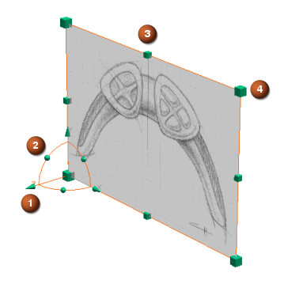

You can dynamically manipulate a raster image's size, location, or orientation using dynamic handles.
You can also modify the TIFF image and translucency of the image plane.
Use dynamic handles attached to the image plane to edit the raster image.

XYZ translation handles (3)
Rotation handles (3)
Non-uniform scale handles (4)
Fixed aspect ratio scale handles (4)
In order to display information on an existing Raster Image plane:
Select the plane in the graphics window.
In the Raster Image dialog box, click Information.